100 gram oda sıcaklığında tereyağı (7 yemek kaşığı)
1/2 çay bardağı sıvı yağ
1/2 çay bardağı süt
1 adet yumurta
2 yemek kaşığı sirke
1/4 çay kaşığı tuz
2 yemek kaşığı yoğurt
1 çay bardağı su
4 su bardağı un
1su bardağı nişasta
250 gram toz Antep fıstığı
50 gram file Antep fıstığı
250 gram eritilmiş tereyağı(18 yemek kaşığı)
Şerbeti İçin
2,5su bardağı toz şeker
3 su bardağı su
1/4 adet limonun suyu
Yapılışı
Hamuru Hazırlamak İçin
Derin bir kabın içerisinde tereyağı, sıvı yağ, süt, yumurta, sirke, tuz, yoğurt ve suyu birleştirin, güzelce karıştırın.
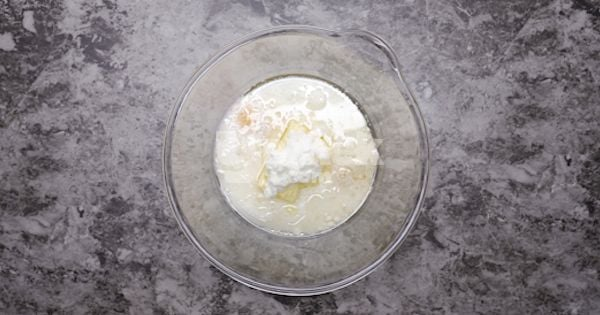
Azar azar un ilave ederek yoğurmaya başlayın, toparlandıktan sonra tezgaha alın ve un ilave ederek ele yapışmayan bir hamur elde edin.
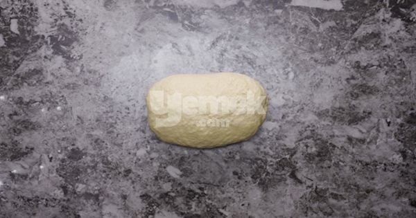
Hamuru 24 eşit parçaya bölüp beze haline getirin.
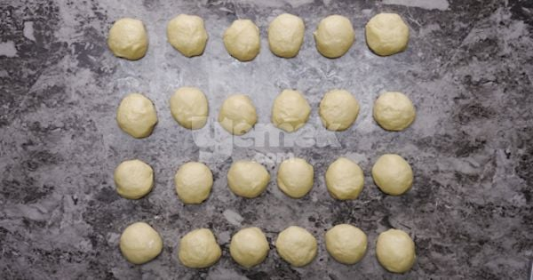
Tezgaha bol nişasta serpin ve bezeleri tatlı tabağı büyüklüğünde açın.
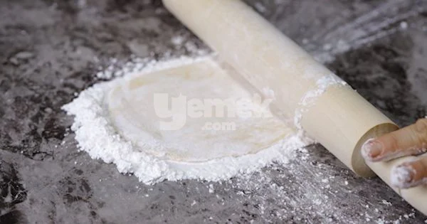
Açtığınız bezelerin üzerini temiz bir bez ile örterek 40 dakika dinlendirin.
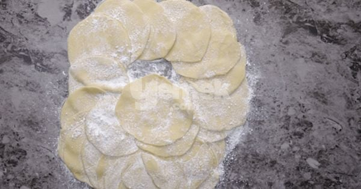
Hamuru Açma Ve Birleştirme Aşaması
Tezgahı hafifçe nişastalayın. Ardından bezelerin üzerine nişasta serperek birkaç tanesini üst üste koyup tepsinizin genişliğinde açmaya başlayın.
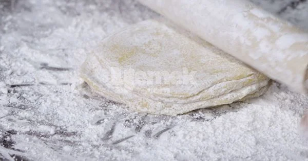
Tüm bezelere aynı işlemi uyguladıktan sonra yufkaları birbirinden ayırın ve bir tanesini tereyağı ile yağlanmış tepsiye serin.
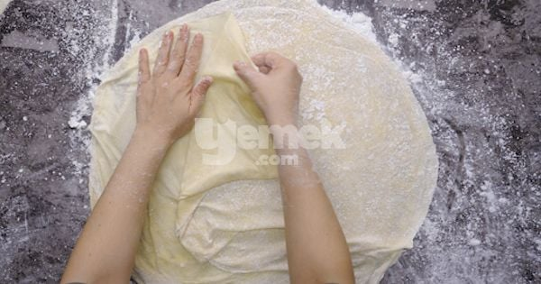
Açtığınız yufkaları alt katman ve üstl katman olmak üzere ikiye bölün. İlk katları sermeye başlayın ve aralarına eritilmiş tereyağı sürün.
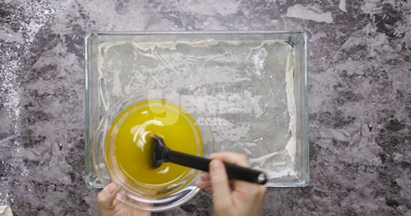
Ortasına fıstığı serin.
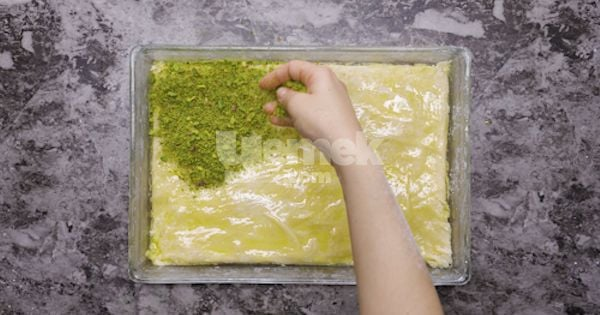
Diğer katları da çıktıktan ve aralarına eritilmiş tereyağı sürdükten sonra bir bıçak yardımıyla hafifçe karelere bölün.
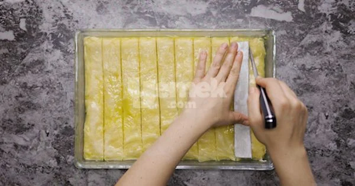
Üzerine de kalan tereyağını ekledikten sonra 195 derece ısıtılmış fırında 10 dakika pişirin. Ardından fırını 180 dereceye indirip 35 dakika daha kontrollü olarak pişirin.
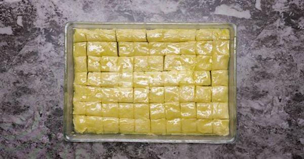
Çıkarıp sıcak baklavaya sıcak şerbetini verin. Çektikten sonra üzerine fıstık serpiştirip servis edin.